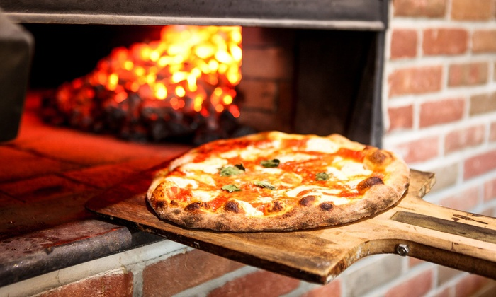
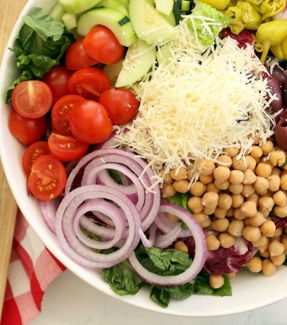
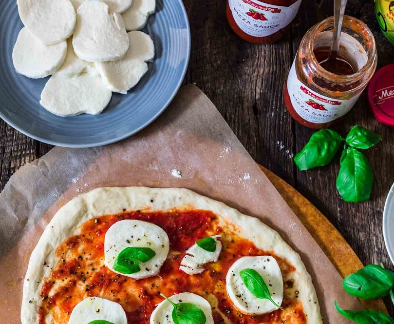

Who we are
We are a family-owned local business since the 1960's dedicated to serving the best pizza your money can buy by use of high-quality fresh ingredients, trained chefs, and all at an affordable price. Our restaurant has a classic old world theme to it, beautiful and aesthetically pleasing, perfect to bring you for a trip back in time for a night to a fancy Italian pizzaria. Whether you're going with your family or as a married couple for a romantic date, our restaurant fits all people regardless of who you are.
What we serve
We serve a variety of different delicious Italian dishes beyond our famous brick oven pizza, from classic salads made from fresh lettuce and homemade dressings, to gourmet spaghetti and ravioli dishes in warm marinara sauce.
And where it comes from
We buy all of our ingredients from local farms and businesses, giving you the freshest ingredients possible and supporting the local economy.
What our customers are saying
"Mondo Vecchio Pizzaria is the best pizzaria I've ever been to. Their service is good and fast, and their food is some of the best I've ever tasted. They are by far the greatest Italian restaurant for miles. My favorite lunch ever has to be their perfectly tossed salads, cold and crisp to satisfy your hunger any time." -Marco